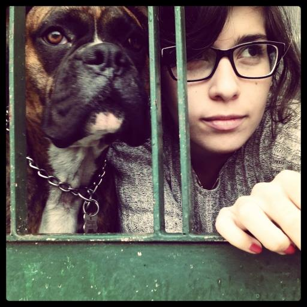

|  |
Ana InésA dos materias y una tesis de recibirme de Lic. en RRII Estudié en la Universidad Nacional de Rosario. Trabajo en Comercio Exterior, pero también me interesa el diseño y la comunicación, así conseguí un segundo trabajo como CM de una marca de ropa para niños. Ahora estoy aprendiendo WD, que no sólo complementa mis intereses, sino que también me permitirá hacer un cambio en mi vida profesional y laboral. Este es mi GitHub por si querés ver mi progreso. |
|
|
| Fechas | Puesto |
|---|---|
| 2017-Actualidad | Analista Jr. Importaciones |
| 2018-Actualidad | Community Manager Semi-Senior |
| 2013-2017 | Analista Jr. Importaciones |